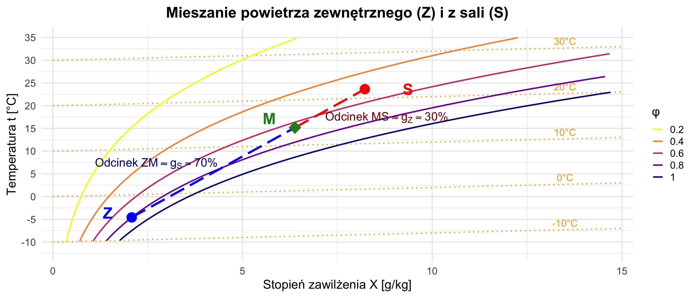

W13: Procesy Klimatyzacyjne
Projektowanie procesów na wykresie h-X
prof. UPP dr hab. inż. Marek Urbaniak
Wydział Inżynierii Środowiska i Inżynierii Mechanicznej


Agenda Wykładu
- Centrala Wentylacyjna (AHU)
- Ogrzewanie i Chłodzenie
- Nawilżanie (Parowe vs Wodne)
- Mieszanie Strumieni (Dźwignia)
- Przemiany Sezonowe (Zima vs Lato)
1. Centrala Wentylacyjna (AHU)
Centrala Wentylacyjna (AHU)
Fabryka powietrza. Każdy element realizuje konkretny proces termodynamiczny na wykresie h-X.
2. Ogrzewanie i Chłodzenie
Ogrzewanie (Nagrzewnica)
- Proces: \(x = const\) (nie dodajemy wody).
- Kierunek: Pionowo w górę na i-x.
- Efekt: Temperatura rośnie, ale wilgotność względna \(\varphi\) spada! (Dlatego zimą w ogrzewanym domu jest sucho — \(\varphi \approx 20-30\%\)).
Chłodzenie Jawne (Chłodnica Sucha)
- Proces: \(x = const\).
- Kierunek: Pionowo w dół.
- Limit: Temperatura punktu rosy (\(t_R\)). Jeśli zejdziemy niżej, zacznie się wykraplanie.
3. Nawilżanie
Jak dodać wodę do powietrza?
A. Nawilżanie Parowe (Lanca Parowa)
Wtryskujemy gorącą parę (\(100^\circ C\)).
- Proces: \(t \approx const\) (izoterma).
- Kierunek: Pionowo w prawo.
- Zaleta: Higieniczne, łatwa kontrola.
- Wada: Drogie (musimy wytworzyć parę = energia).
B. Nawilżanie Wodne (Zraszacz/Adiabatyczne)
Rozpylamy zimną wodę. Powietrze musi oddać ciepło, żeby tę wodę odparować.
- Proces: \(h = const\) (Izentpalpa).
- Kierunek: Ukośnie w dół-prawo (wzdłuż linii entalpii).
- Efekt: Wilgotność rośnie (\(x \uparrow\)), ale temperatura spada (\(t \downarrow\))!
- Zastosowanie: Chłodzenie wyparne (tanie chłodzenie latem).
4. Mieszanie Strumieni
Mieszamy powietrze świeże (zewnętrzne Z) z powietrzem obiegowym (z sali S).
Reguła Dźwigni:
Punkt mieszania M leży na prostej łączącej Z i S. Odległość zależy od proporcji strumieni masy.
\[ \frac{m_Z}{m_S} = \frac{\text{odcinek } SM}{\text{odcinek } ZM} \]
\[ h_M = g_Z h_Z + g_S h_S \]
\[ x_M = g_Z x_Z + g_S x_S \] (\(g\) - udział masowy).
Wizualizacja: Mieszanie
Mieszanie pozwala zaoszczędzić ogromne ilości energii (recyrkulacja ciepłego powietrza z sali).
5. Przemiany Sezonowe
ZIMA (Cel: Ogrzać i Nawilżyć)
Punkt Zewnętrzny: -10°C, 90%. Punkt Celowy: 22°C, 50%.
LATO (Cel: Ochłodzić i Osuszyć)
Punkt Zewnętrzny: 32°C, 40%. Punkt Celowy: 24°C, 50%.
Podsumowanie W13
- AHU to ciąg procesów termodynamicznych.
- Ogrzewanie osusza powietrze (względnie).
- Nawilżanie adiabatyczne (wodne) darmowo chłodzi powietrze.
- Mieszanie to prosta średnia ważona na wykresie.
- Klimatyzacja letnia jest najdroższa, bo wymaga usuwania ciepła utajonego (skraplanie pary).
Zadanie Dla Chętnych
Zaprojektuj proces zimowy: Zewn (-5°C, x=2g/kg).
Cel (20°C, x=10g/kg)
Ile wody trzeba dolać i ile ciepła dostarczyć?
Rozwiązanie Zadania
Dane: Stan początkowy (1): \(t_1 = -5^\circ C\), \(X_1 = 2\) g/kg | Stan końcowy (2): \(t_2 = 20^\circ C\), \(X_2 = 10\) g/kg
1. Bilans Wilgoci
Ile wody trzeba dolać na każdy kg “suchej” masy powietrza?
\[ \Delta X = X_2 - X_1 \] \[ \Delta X = 10 - 2 = \mathbf{8 \, \frac{\text{g}}{\text{kg}_{s.p.}}} \]
2. Bilans Energii (ciepło)
Wzór na entalpię: \(h \approx 1.005 t + \frac{X}{1000} (2501 + 1.86 t)\)
- Początek (\(h_1\)): \(1.005(-5) + 0.002(2501 - 9.3) \approx \mathbf{0 \text{ kJ/kg}}\)
- Koniec (\(h_2\)): \(1.005(20) + 0.010(2501 + 37.2) \approx \mathbf{45.5 \text{ kJ/kg}}\)
Zapotrzebowanie na ciepło
\[ \Delta h = h_2 - h_1 = 45.5 - 0 = \mathbf{45.5 \, \text{kJ/kg}_{s.p.}} \]
Termodynamika Techniczna (W13)